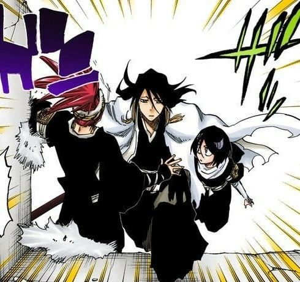

Top Story Headline

Bleach es una serie de manga y anime escrita e ilustrada por Tite Kubo. La serie narra las aventuras de Ichigo Kurosaki, un joven adolescente de quince años de edad que accidentalmente absorbe los poderes de una shinigami —personificación japonesa del dios de la muerte— llamada Rukia Kuchiki.
Bleach es una serie de manga y anime escrita e ilustrada por Tite Kubo. La serie narra las aventuras de Ichigo Kurosaki, un joven adolescente de quince años de edad que accidentalmente absorbe los poderes de una shinigami —personificación japonesa del dios de la muerte— llamada Rukia Kuchiki.
A monthyly newsletter brought to you by (Company Name)

VOL.1 ISUUE 1 IMAGE 1 VERY BEAUTIFUL

VOL.1 ISUUE 1 IMAGE 1 VERY BEAUTIFUL

VOL.1 ISUUE 1 IMAGE 1 VERY BEAUTIFUL

VOL.1 ISUUE 1 IMAGE 1 VERY BEAUTIFUL
Ichigo Kurosaki es un estudiante de secundaria ordinario, hasta que su familia es atacada por un Hollow, un espíritu corrupto que busca devorar las almas humanas. Es entonces cuando conoce a una Soul Reaper llamada Rukia Kuchiki, quien se lesiona mientras protege a la familia de Ichigo del agresor. Para salvar a su familia, Ichigo acepta la oferta de Rukia de tomar sus poderes y, como resultado, se convierte en Soul Reaper.
LAS IMÁGENES LAS SAQUE DE MI GALERÍA :v